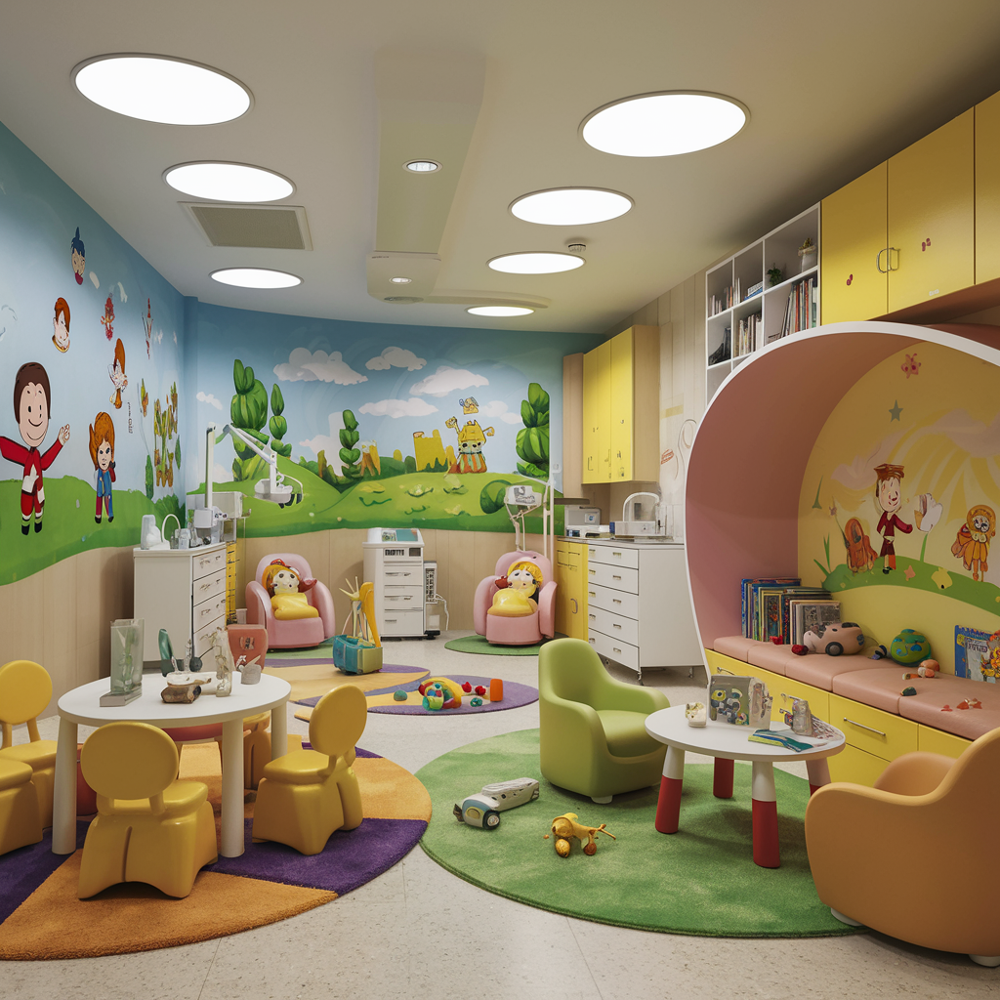

Horário de Atendimento
Clínica Geral

A Clínica Geral oferece uma abordagem completa para a saúde geral, tratando uma ampla gama de condições e problemas médicos. Nossos médicos gerais estão disponíveis para consultas, diagnósticos e tratamentos durante o horário regular de atendimento.
Psicologia
Os serviços de psicologia incluem suporte para problemas emocionais, aconselhamento e terapia. Nossos psicólogos são especializados em oferecer assistência para uma variedade de desafios psicológicos e emocionais.
Pediatria
A pediatria cuida da saúde e bem-estar de crianças e adolescentes. Nossos pediatras oferecem exames regulares, vacinas e tratamentos para doenças infantis. Eles estão disponíveis para atender suas necessidades em horários específicos durante a semana.
Oftalmologia
Os serviços de oftalmologia incluem exames de visão, diagnósticos e tratamentos para problemas oculares. Nossos oftalmologistas estão prontos para ajudar com consultas e procedimentos especializados.
Horário de Atendimento
| Serviço | Segunda a Sexta | Sábados | Feriados |
|---|---|---|---|
| Clínica Geral | 08h - 19h | 08h - 14h | 08h - 14h |
| Psicologia | 08h - 19h | 08h - 14h | 08h - 14h |
| Pediatria | 08h - 19h | 08h - 18h | - |
| Oftalmologia | 08h - 19h | 08h - 18h | - |